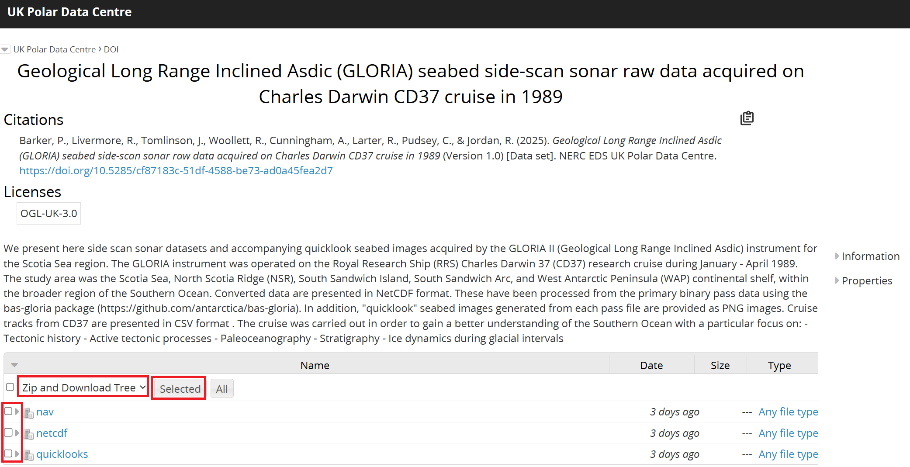

Checking GLORIA CD37 side-scan sonar data#
Author: Ellie Fisher (@efisher008) and Alice Fremand (@almand_BAS)
Date: 07/02/2025
Aim#
The goal of this tutorial is to showcase how to read and check the GLORIA CD37 side-scan sonar data available from the UK Polar Data Centre
Survey background#
The GLORIA instrument was operated on the Royal Research Ship (RRS) Charles Darwin CD37 research cruise during January – April 1989. The study area was the Scotia Sea, North Scotia Ridge (NSR), South Sandwich Island, South Sandwich Arc, and West Antarctic Peninsula (WAP) continental shelf, within the broader region of the Southern Ocean.
The cruise was carried out in order to gain a better understanding of the Southern Ocean with a particular focus on:
Tectonic history
Active tectonic processes
Paleoceanography
Stratigraphy
Ice dynamics during glacial intervals
List of available GLORIA data#
The metadata record for the GLORIA CD37 dataset can be found from the UK Polar Data Centre:
Barker, P., Livermore, R., Tomlinson, J., Woollett, R., Cunningham, A., Larter, R., Pudsey, C., & Jordan, R. (2025). Geological Long Range Inclined Asdic (GLORIA) seabed side-scan sonar raw data acquired on Charles Darwin CD37 cruise in 1989 (Version 1.0) [Data set]. NERC EDS UK Polar Data Centre. https://doi.org/10.5285/cf87183c-51df-4588-be73-ad0a45fea2d7
The GLORIA CD37 NetCDF files are available from: https://ramadda.data.bas.ac.uk/repository/entry/show?entryid=cf87183c-51df-4588-be73-ad0a45fea2d7
Downloading the data via the Ramadda interface#
From the metadata page, it is possible to access the data by clicking on ‘GET DATA’. You will then be redirected to our Ramadda repository.
From the interface, it is possible to download the data individually by clicking on the dataset you want to download. It is also possible to zip and download the data together by clicking at the top of the Ramadda interface on the down arrow next to “Polar Data Centre > DOI” and Zip and Download Tree:

To download a ZIP file containing all pass files, use the following command (the preceeding ! runs the line as a Linux command):
!wget "https://ramadda.data.bas.ac.uk/repository/entry/show/UK+Polar+Data+Centre/DOI/Geological+Long+Range+Inclined+Asdic+%28GLORIA%29+seabed+side-scan+sonar+raw+data+acquired+on+Charles+Darwin+CD37+cruise+in+1989/netcdf?entryid=synth%3Acf87183c-51df-4588-be73-ad0a45fea2d7%3AL25ldGNkZg%3D%3D&output=zip.tree"
To download a single file, run the following command:
!wget --content-disposition --trust-server-names "https://ramadda.data.bas.ac.uk/repository/entry/get/CD37_GLORIA_PASS169.nc?entryid=synth%3Acf87183c-51df-4588-be73-ad0a45fea2d7%3AL25ldGNkZi9DRDM3X0dMT1JJQV9QQVNTMTY5Lm5j" -O "CD37_GLORIA_PASS169.nc"
To set up the virtual environment with Conda (if desired):#
These commands will need to be run in a Linux environment.
If you do not have conda on your machine, you will need to install it. This is a package manager which is used with languages like Python.
conda create -n gloria_env
conda activate gloria_env
conda config –env –add channels conda-forge
conda config –env –set channel_priority strict
conda install netCDF4
The new environment is then able to activated again simply by running: conda activate gloria_env.
Any packages or modules which are installed while the environment is active will be added to the environment configuration and can be seen by running: conda list
To set up the virtual environment on UNIX (if desired):#
In the folder where you have your code, you need to launch:
python3 -m venv gloria_env
It will create a folder with all the environment for python. To activate the virtual environment you need to launch it:
source gloria_env/bin/activate.csh
You need to make sure that [gloria_env] appears before your name on the machine. That means that you are using the virtual environment. Then you need to upgrade pip which is the command that installs the packages:
python3 -m pip install --upgrade pip
And install the other libraries:
python3 -m pip install netCDF4
Useful dependencies#
For the code to run, it is important to install the correct dependancies and libraries. In particular the following library is crucial for the code to run:
netCDF4 module to check NetCDF data in Python
pandas package to work with CSV data
numpy package to work with numerical data and 3-dimensional arrays
matplotlib package to plot geographic and non-geographic data
cartopy package to plot geographic (map-based) data
If any of the modules specified in this notebook are not currently installed in your Linux environment, you will need to install these, for example with pip install.
In this tutorial, the virtual environment is already set up. The list of the current libraries loaded is given in the list below.
!pip list
Package Version
------------------------- --------------
affine 2.4.0
anyio 4.8.0
argon2-cffi 23.1.0
argon2-cffi-bindings 21.2.0
arrow 1.3.0
asttokens 3.0.0
async-lru 2.0.4
attrs 25.1.0
babel 2.17.0
beautifulsoup4 4.13.3
bleach 6.2.0
Brotli 1.1.0
cached-property 1.5.2
Cartopy 0.24.0
certifi 2025.1.31
cffi 1.17.1
cftime 1.6.4
charset-normalizer 3.4.1
click 8.1.8
click-plugins 1.1.1
cligj 0.7.2
colorama 0.4.6
comm 0.2.2
contourpy 1.3.1
cycler 0.12.1
debugpy 1.8.12
decorator 5.2.1
defusedxml 0.7.1
exceptiongroup 1.2.2
executing 2.1.0
fastjsonschema 2.21.1
fonttools 4.56.0
fqdn 1.5.1
h11 0.14.0
h2 4.2.0
hpack 4.1.0
httpcore 1.0.7
httpx 0.28.1
hyperframe 6.1.0
idna 3.10
importlib_metadata 8.6.1
importlib_resources 6.5.2
ipykernel 6.29.5
ipython 8.32.0
isoduration 20.11.0
jedi 0.19.2
Jinja2 3.1.5
json5 0.10.0
jsonpointer 3.0.0
jsonschema 4.23.0
jsonschema-specifications 2024.10.1
jupyter_client 8.6.3
jupyter_core 5.7.2
jupyter-events 0.12.0
jupyter-lsp 2.2.5
jupyter_server 2.15.0
jupyter_server_terminals 0.5.3
jupyterlab 4.3.5
jupyterlab_pygments 0.3.0
jupyterlab_server 2.27.3
kiwisolver 1.4.7
MarkupSafe 3.0.2
matplotlib 3.10.0
matplotlib-inline 0.1.7
mistune 3.1.2
munkres 1.1.4
nbclient 0.10.2
nbconvert 7.16.6
nbformat 5.10.4
nest_asyncio 1.6.0
netCDF4 1.7.2
notebook_shim 0.2.4
numpy 2.2.3
overrides 7.7.0
packaging 24.2
pandas 2.2.3
pandocfilters 1.5.0
parso 0.8.4
pickleshare 0.7.5
pillow 11.1.0
pip 25.0.1
pkgutil_resolve_name 1.3.10
platformdirs 4.3.6
prometheus_client 0.21.1
prompt_toolkit 3.0.50
psutil 7.0.0
pure_eval 0.2.3
pycparser 2.22
Pygments 2.19.1
pyparsing 3.2.1
pyproj 3.7.1
pyshp 2.3.1
PySocks 1.7.1
python-dateutil 2.9.0.post0
python-json-logger 2.0.7
pytz 2024.1
pywin32 307
pywinpty 2.0.15
PyYAML 6.0.2
pyzmq 26.2.1
rasterio 1.4.3
referencing 0.36.2
requests 2.32.3
rfc3339_validator 0.1.4
rfc3986-validator 0.1.1
rpds-py 0.23.1
Send2Trash 1.8.3
setuptools 75.8.2
shapely 2.0.7
six 1.17.0
sniffio 1.3.1
snuggs 1.4.7
soupsieve 2.5
stack_data 0.6.3
terminado 0.18.1
tinycss2 1.4.0
tomli 2.2.1
tornado 6.4.2
traitlets 5.14.3
types-python-dateutil 2.9.0.20241206
typing_extensions 4.12.2
typing_utils 0.1.0
tzdata 2025.1
uri-template 1.3.0
urllib3 2.2.2
wcwidth 0.2.13
webcolors 24.11.1
webencodings 0.5.1
websocket-client 1.8.0
wget 3.2
win_inet_pton 1.1.0
zipp 3.21.0
Load the relevant modules#
import netCDF4 as nc
import pandas as pd
import numpy as np
import datetime as dt
from datetime import datetime
import matplotlib.pyplot as plt
from matplotlib.ticker import MultipleLocator
import cartopy
from cartopy import crs as ccrs, feature as cfeature
import os
import pprint
%matplotlib inline
Check the metadata information#
If your downloaded files are not in the directory you are running this code from, you will need to specify the full or relative path to that directory.
A NetCDF file contains global attributes, group attributes, variable attributes and data. We will guide you through how to read the NetCDF file in Python below.
First, let’s open the netCDF file and have a look at the global attributes of the CD37_GLORIA_PASS169.nc netCDF file
f = "CD37_GLORIA_PASS169.nc"
fnc = nc.Dataset(f)
print(fnc.ncattrs())
['Conventions', 'title', 'summary', 'acknowledgement', 'keywords', 'citation', 'license', 'history', 'source', 'comment', 'institution', 'contributor_name', 'contributor_role', 'project', 'references', 'publisher_name', 'publisher_type', 'publisher_email', 'publisher_url', 'time_coverage_start', 'time_coverage_end', 'geospatial_lon_min', 'geospatial_lon_max', 'geospatial_lat_min', 'geospatial_lat_max', 'geospatial_bounds_crs', 'metadata_link']
You can display key information about the NetCDF dataset (global attributes, variables, dimensions, groups) by just using a print function:
print(fnc)
<class 'netCDF4.Dataset'>
root group (NETCDF4 data model, file format HDF5):
Conventions: ACDD-1.3, CF-1.12
title: Geological Long Range Inclined Asdic (GLORIA) seabed side-scan sonar raw data acquired on Charles Darwin CD37 cruise in 1989
summary: The GLORIA instrument was operated on the Royal Research Ship (RRS) Charles Darwin 37 (CD37) research cruise during January - April 1989. The study area was the Scotia Sea, North Scotia Ridge (NSR), South Sandwich Island, South Sandwich Arc, and West Antarctic Peninsula (WAP) continental shelf, within the broader region of the Southern Ocean. Raw data are presented in NetCDF format. These have been pre-processed from the binary pass data using the bas-gloria package (https://github.com/antarctica/bas-gloria). The data have been improved with additional metadata such as latitude, longitude and depth.
acknowledgement: This project was funded by BAS under project code B6153: Scotia Sea tectonic evolution and palaeo-circulation.
keywords: Antarctica,GLORIA,Southern Ocean,marine geology,marine geophysics,sidescan sonar
citation: (2025). Geological Long Range Inclined Asdic (GLORIA) seabed side-scan sonar raw data acquired on Charles Darwin CD37 cruise in 1989 (Version 1.0) [Data set]. NERC EDS UK Polar Data Centre. https://doi.org/10.5285/cf87183c-51df-4588-be73-ad0a45fea2d7
license: http://www.nationalarchives.gov.uk/doc/open-government-licence/version/3/
history: The acquisition instrument for this dataset was GLORIA II, operated on RRS Charles Darwin. The sonar towfish was 8m in length, and towed 300m behind the vessel at 50m depth. Data were collected on the RRS Charles Darwin CD37 scientific research cruise and stored on 9-track magnetic tapes, which are currently held by the British Antarctic Survey, Cambridge. Raw data were recovered from 9-track magnetic tapes in 2021. Transcription from tape was performed by Troika International/Interica. There was some data loss, due to stiction causing read errors. Heat treatment of the tapes improved data recovery at this stage. A Python package was developed by Paul Breen (BAS) to handle the GLORIA raw pass files. Conversion to NetCDF and generation of quicklooks for the GLORIA data from CD37 was performed in 2024/2025 using the package. This can be accessed here: https://github.com/antarctica/bas-gloria. Decoding of the data has been performed following the structure as descibed in Table 1 of Searle et al. 1989. The geographic position of the GLORIA instrument relative to the ship was calculated from the CD37 cruise track by introducing a fixed time offset of 90 seconds to the datetime of the ship at each recorded coordinate point. Latitude and longitude were subsequently interpolated, to increase the frequency of the coordinate information such that this could be added to the NetCDF attribute metadata by matching the track information with passes based on the datetime field.
source: Geological Long-Range Inclined Asdic (GLORIA) II
comment: In the initial data recovery, PASS245 was long and PASS246 was missed. This was determined to be caused by a reading error, resulting in concatenation of consecutive data from PASS246 to PASS245. These passes were then read from tape separately, and are now considered complete. In the recovered raw data, some passes were missing or partially complete. PASS038, PASS227 and PASS236 were partially complete, and PASS039, PASS040 and PASS231 were missing. Copies of these data held at BODC were provided in CDF format, which were converted to NetCDF. These passes are now considered complete. As the CDF files did not contain data for the slant range correction code, zero flag, hour mark flag and unused attributes (which were determined to be non-significant in the recovered raw data), a NaN value of 9999 has been used in the converted files for these passes. A fixed 90 second time offset was added to the ship track datetime to account for tow distance of the GLORIA instrument behind the ship (the output of this was the GLORIA track CSV). The latitude and longitude of the GLORIA track was then interpolated to provide the value of these coordinates at the original datetime of the ship track. This was done in order to map geographic information to the timestamps within the netCDF metadata. Interpolation on the latitude and longitude fields from ship track data was done with the Pandas Python library. Depth values within the NetCDF file metadata are provided by the International Bathymetric Chart of the Southern Ocean (IBCSO) version 2. Due to the resolution of IBCSO, the depth in the GLORIA NetCDF metadata is provided with a horizontal resolution of 500x500m, leading to some positive values close to coastline areas.
institution: British Antarctic Survey
contributor_name: Peter F. Barker, Roy A. Livermore, Jeremy S. Tomlinson, Richard Woollett, Alexander P. Cunningham, Robert D. Larter, Carol J. Pudsey, Richard W. Jordan
contributor_role: Chief Scientific Officer, Researcher, Researcher, Researcher, Researcher, Researcher, Researcher, Researcher
project: This project was funded by BAS under project code B6153: Scotia Sea tectonic evolution and palaeo-circulation.
references: Cunningham, Alexander P.. 1998 Geophysical Investigations of the North Scotia Ridge. University of London, PhD Thesis, Tomlinson, J.S.; Pudsey, C.J.; Livermore, R.A.; Larter, Robert D. ; Barker, Peter F.. 1992 Long-range sidescan sonar (GLORIA) survey of the Antarctic Peninsula Pacific margin. In: Yoshida, Y.; Kaminuma, K.; Shiraishi, K., (eds.) Recent progress in Antarctic earth science. Proceedings of the Sixth International Symposium on Antarctic Earth Sciences. Ranzan, Saitama, Japan, September 1991. Tokyo, Terra Scientific Publishing, 423-429, Searle, R. C., Le Bas, T. P., Mitchell, N. C., Somers, M. L., Parson, L. M., & Patriat, P. H. (1990). GLORIA image processing: The state of the art. Marine geophysical researches, 12, 21-39, Searle, R. C., & Hunter, P. M. (1986). The use of GLORIA long-range sidescan sonar for deep-ocean mapping. In Autocarto London (Vol. 2, pp. 339-388).
publisher_name: NERC EDS UK Polar Data Centre
publisher_type: institution
publisher_email: pdc@bas.ac.uk
publisher_url: https://www.bas.ac.uk/data/uk-pdc/
time_coverage_start: 1989-01-04
time_coverage_end: 1989-04-02
geospatial_lon_min: -74.8
geospatial_lon_max: 0
geospatial_lat_min: -65
geospatial_lat_max: -51.5
geospatial_bounds_crs: EPSG:4326
metadata_link: https://doi.org/10.5285/cf87183c-51df-4588-be73-ad0a45fea2d7
dimensions(sizes):
variables(dimensions):
groups: scan1, scan2, scan3, scan4, scan5, scan6, scan7, scan8, scan9, scan10, scan11, scan12, scan13, scan14, scan15, scan16, scan17, scan18, scan19, scan20, scan21, scan22, scan23, scan24, scan25, scan26, scan27, scan28, scan29, scan30, scan31, scan32, scan33, scan34, scan35, scan36, scan37, scan38, scan39, scan40, scan41, scan42, scan43, scan44, scan45, scan46, scan47, scan48, scan49, scan50, scan51, scan52, scan53, scan54, scan55, scan56, scan57, scan58, scan59, scan60, scan61, scan62, scan63, scan64, scan65, scan66, scan67, scan68, scan69, scan70, scan71, scan72, scan73, scan74, scan75, scan76, scan77, scan78, scan79, scan80, scan81, scan82, scan83, scan84, scan85, scan86, scan87, scan88, scan89, scan90, scan91, scan92, scan93, scan94, scan95, scan96, scan97, scan98, scan99, scan100, scan101, scan102, scan103, scan104, scan105, scan106, scan107, scan108, scan109, scan110, scan111, scan112, scan113, scan114, scan115, scan116, scan117, scan118, scan119, scan120, scan121, scan122, scan123, scan124, scan125, scan126, scan127, scan128, scan129, scan130, scan131, scan132, scan133, scan134, scan135, scan136, scan137, scan138, scan139, scan140, scan141, scan142, scan143, scan144, scan145, scan146, scan147, scan148, scan149, scan150, scan151, scan152, scan153, scan154, scan155, scan156, scan157, scan158, scan159, scan160, scan161, scan162, scan163, scan164, scan165, scan166, scan167, scan168, scan169, scan170, scan171, scan172, scan173, scan174, scan175, scan176, scan177, scan178, scan179, scan180, scan181, scan182, scan183, scan184, scan185, scan186, scan187, scan188, scan189, scan190, scan191, scan192, scan193, scan194, scan195, scan196, scan197, scan198, scan199, scan200, scan201, scan202, scan203, scan204, scan205, scan206, scan207, scan208, scan209, scan210, scan211, scan212, scan213, scan214, scan215, scan216, scan217, scan218, scan219, scan220, scan221, scan222, scan223, scan224, scan225, scan226, scan227, scan228, scan229, scan230, scan231, scan232, scan233, scan234, scan235, scan236, scan237, scan238, scan239, scan240, scan241, scan242, scan243, scan244, scan245, scan246, scan247, scan248, scan249, scan250, scan251, scan252, scan253, scan254, scan255, scan256, scan257, scan258, scan259, scan260, scan261, scan262, scan263, scan264, scan265, scan266, scan267, scan268, scan269, scan270, scan271, scan272, scan273, scan274, scan275, scan276, scan277, scan278, scan279, scan280, scan281, scan282, scan283, scan284, scan285, scan286, scan287, scan288, scan289, scan290, scan291, scan292, scan293, scan294, scan295, scan296, scan297, scan298, scan299, scan300, scan301, scan302, scan303, scan304, scan305, scan306, scan307, scan308, scan309, scan310, scan311, scan312, scan313, scan314, scan315, scan316, scan317, scan318, scan319, scan320, scan321, scan322, scan323, scan324, scan325, scan326, scan327, scan328, scan329, scan330, scan331, scan332, scan333, scan334, scan335, scan336, scan337, scan338, scan339, scan340, scan341, scan342, scan343, scan344, scan345, scan346, scan347, scan348, scan349, scan350, scan351, scan352, scan353, scan354, scan355, scan356, scan357, scan358, scan359, scan360, scan361, scan362, scan363, scan364, scan365, scan366, scan367, scan368, scan369, scan370, scan371, scan372, scan373, scan374, scan375, scan376, scan377, scan378, scan379, scan380, scan381, scan382, scan383, scan384, scan385, scan386, scan387, scan388, scan389, scan390, scan391, scan392, scan393, scan394, scan395, scan396, scan397, scan398, scan399, scan400, scan401, scan402, scan403, scan404, scan405, scan406, scan407, scan408, scan409, scan410, scan411, scan412, scan413, scan414, scan415, scan416, scan417, scan418, scan419, scan420, scan421, scan422, scan423, scan424, scan425, scan426, scan427, scan428, scan429, scan430, scan431, scan432, scan433, scan434, scan435, scan436, scan437, scan438, scan439, scan440, scan441, scan442, scan443, scan444, scan445, scan446, scan447, scan448, scan449, scan450, scan451, scan452, scan453, scan454, scan455, scan456, scan457, scan458, scan459, scan460, scan461, scan462, scan463, scan464, scan465, scan466, scan467, scan468, scan469, scan470, scan471, scan472, scan473, scan474, scan475, scan476, scan477, scan478, scan479, scan480, scan481, scan482, scan483, scan484, scan485, scan486, scan487, scan488, scan489, scan490, scan491, scan492, scan493, scan494, scan495, scan496, scan497, scan498, scan499, scan500, scan501, scan502, scan503, scan504, scan505, scan506, scan507, scan508, scan509, scan510, scan511, scan512, scan513, scan514, scan515, scan516, scan517, scan518, scan519, scan520, scan521, scan522, scan523, scan524, scan525, scan526, scan527, scan528, scan529, scan530, scan531, scan532, scan533, scan534, scan535, scan536, scan537, scan538, scan539, scan540, scan541, scan542, scan543, scan544, scan545, scan546, scan547, scan548, scan549, scan550, scan551, scan552, scan553, scan554, scan555, scan556, scan557, scan558, scan559, scan560, scan561, scan562, scan563, scan564, scan565, scan566, scan567, scan568, scan569, scan570, scan571, scan572, scan573, scan574, scan575, scan576, scan577, scan578, scan579, scan580, scan581, scan582, scan583, scan584, scan585, scan586, scan587, scan588, scan589, scan590, scan591, scan592, scan593, scan594, scan595, scan596, scan597, scan598, scan599, scan600, scan601, scan602, scan603, scan604, scan605, scan606, scan607, scan608, scan609, scan610, scan611, scan612, scan613, scan614, scan615, scan616, scan617, scan618, scan619, scan620, scan621, scan622, scan623, scan624, scan625, scan626, scan627, scan628, scan629, scan630, scan631, scan632, scan633, scan634, scan635, scan636, scan637, scan638, scan639, scan640, scan641, scan642, scan643, scan644, scan645, scan646, scan647, scan648, scan649, scan650, scan651, scan652, scan653, scan654, scan655, scan656, scan657, scan658, scan659, scan660, scan661, scan662, scan663, scan664, scan665, scan666, scan667, scan668, scan669, scan670, scan671, scan672, scan673, scan674, scan675, scan676, scan677, scan678, scan679, scan680, scan681, scan682, scan683, scan684, scan685, scan686, scan687, scan688, scan689, scan690, scan691, scan692, scan693, scan694, scan695, scan696, scan697, scan698, scan699, scan700, scan701, scan702, scan703, scan704, scan705, scan706, scan707, scan708, scan709, scan710, scan711, scan712, scan713, scan714, scan715, scan716, scan717, scan718, scan719, scan720
You can also access directly a single global attribute value by treating their values as if they are key-value pairs in a dictionary:
print(fnc.__dict__['history'])
The acquisition instrument for this dataset was GLORIA II, operated on RRS Charles Darwin. The sonar towfish was 8m in length, and towed 300m behind the vessel at 50m depth. Data were collected on the RRS Charles Darwin CD37 scientific research cruise and stored on 9-track magnetic tapes, which are currently held by the British Antarctic Survey, Cambridge. Raw data were recovered from 9-track magnetic tapes in 2021. Transcription from tape was performed by Troika International/Interica. There was some data loss, due to stiction causing read errors. Heat treatment of the tapes improved data recovery at this stage. A Python package was developed by Paul Breen (BAS) to handle the GLORIA raw pass files. Conversion to NetCDF and generation of quicklooks for the GLORIA data from CD37 was performed in 2024/2025 using the package. This can be accessed here: https://github.com/antarctica/bas-gloria. Decoding of the data has been performed following the structure as descibed in Table 1 of Searle et al. 1989. The geographic position of the GLORIA instrument relative to the ship was calculated from the CD37 cruise track by introducing a fixed time offset of 90 seconds to the datetime of the ship at each recorded coordinate point. Latitude and longitude were subsequently interpolated, to increase the frequency of the coordinate information such that this could be added to the NetCDF attribute metadata by matching the track information with passes based on the datetime field.
Checking the NetCDF data#
Now let’s access the data by opening the NetCDF file in “read” mode (“r” option in nc.Dataset object construction), and store the metadata information in lists to work with later.
with nc.Dataset(f, mode = "r") as ds:
group_names = list(ds.groups.keys())
# Initialize a dictionary to store each group's attributes as an indexable sub-dict.
attributes = {}
data = {}
# Iterate through all groups and access their data
for group_name, group in ds.groups.items():
# Access the 'scan' variable which contains the sample values (data)
if 'scan' in group.variables:
scan_data = group.variables['scan'][:]
data.update({group_name: scan_data})
for group_name in group_names:
group = ds.groups[group_name]
# Initialize a dictionary to store attributes of the current group
attributes_of_group = {}
# Access and store group attributes
for attr_name in group.ncattrs():
attr_value = group.getncattr(attr_name)
attributes_of_group[attr_name] = attr_value # Store attributes in a dictionary
# Append the dictionary of attributes for the current group to the list
attributes.update({group_name: attributes_of_group})
List group attributes and data structure#
The group structure is as follows: each group represents one GLORIA scan, and the group attributes provide the metadata for this scan. For complete passes, 720 scans will be present. We can check the number of group and list them as follows:
print(f"Groups found: {group_names}")
print(f" The total number of passes is {len(group_names)}")
Groups found: ['scan1', 'scan2', 'scan3', 'scan4', 'scan5', 'scan6', 'scan7', 'scan8', 'scan9', 'scan10', 'scan11', 'scan12', 'scan13', 'scan14', 'scan15', 'scan16', 'scan17', 'scan18', 'scan19', 'scan20', 'scan21', 'scan22', 'scan23', 'scan24', 'scan25', 'scan26', 'scan27', 'scan28', 'scan29', 'scan30', 'scan31', 'scan32', 'scan33', 'scan34', 'scan35', 'scan36', 'scan37', 'scan38', 'scan39', 'scan40', 'scan41', 'scan42', 'scan43', 'scan44', 'scan45', 'scan46', 'scan47', 'scan48', 'scan49', 'scan50', 'scan51', 'scan52', 'scan53', 'scan54', 'scan55', 'scan56', 'scan57', 'scan58', 'scan59', 'scan60', 'scan61', 'scan62', 'scan63', 'scan64', 'scan65', 'scan66', 'scan67', 'scan68', 'scan69', 'scan70', 'scan71', 'scan72', 'scan73', 'scan74', 'scan75', 'scan76', 'scan77', 'scan78', 'scan79', 'scan80', 'scan81', 'scan82', 'scan83', 'scan84', 'scan85', 'scan86', 'scan87', 'scan88', 'scan89', 'scan90', 'scan91', 'scan92', 'scan93', 'scan94', 'scan95', 'scan96', 'scan97', 'scan98', 'scan99', 'scan100', 'scan101', 'scan102', 'scan103', 'scan104', 'scan105', 'scan106', 'scan107', 'scan108', 'scan109', 'scan110', 'scan111', 'scan112', 'scan113', 'scan114', 'scan115', 'scan116', 'scan117', 'scan118', 'scan119', 'scan120', 'scan121', 'scan122', 'scan123', 'scan124', 'scan125', 'scan126', 'scan127', 'scan128', 'scan129', 'scan130', 'scan131', 'scan132', 'scan133', 'scan134', 'scan135', 'scan136', 'scan137', 'scan138', 'scan139', 'scan140', 'scan141', 'scan142', 'scan143', 'scan144', 'scan145', 'scan146', 'scan147', 'scan148', 'scan149', 'scan150', 'scan151', 'scan152', 'scan153', 'scan154', 'scan155', 'scan156', 'scan157', 'scan158', 'scan159', 'scan160', 'scan161', 'scan162', 'scan163', 'scan164', 'scan165', 'scan166', 'scan167', 'scan168', 'scan169', 'scan170', 'scan171', 'scan172', 'scan173', 'scan174', 'scan175', 'scan176', 'scan177', 'scan178', 'scan179', 'scan180', 'scan181', 'scan182', 'scan183', 'scan184', 'scan185', 'scan186', 'scan187', 'scan188', 'scan189', 'scan190', 'scan191', 'scan192', 'scan193', 'scan194', 'scan195', 'scan196', 'scan197', 'scan198', 'scan199', 'scan200', 'scan201', 'scan202', 'scan203', 'scan204', 'scan205', 'scan206', 'scan207', 'scan208', 'scan209', 'scan210', 'scan211', 'scan212', 'scan213', 'scan214', 'scan215', 'scan216', 'scan217', 'scan218', 'scan219', 'scan220', 'scan221', 'scan222', 'scan223', 'scan224', 'scan225', 'scan226', 'scan227', 'scan228', 'scan229', 'scan230', 'scan231', 'scan232', 'scan233', 'scan234', 'scan235', 'scan236', 'scan237', 'scan238', 'scan239', 'scan240', 'scan241', 'scan242', 'scan243', 'scan244', 'scan245', 'scan246', 'scan247', 'scan248', 'scan249', 'scan250', 'scan251', 'scan252', 'scan253', 'scan254', 'scan255', 'scan256', 'scan257', 'scan258', 'scan259', 'scan260', 'scan261', 'scan262', 'scan263', 'scan264', 'scan265', 'scan266', 'scan267', 'scan268', 'scan269', 'scan270', 'scan271', 'scan272', 'scan273', 'scan274', 'scan275', 'scan276', 'scan277', 'scan278', 'scan279', 'scan280', 'scan281', 'scan282', 'scan283', 'scan284', 'scan285', 'scan286', 'scan287', 'scan288', 'scan289', 'scan290', 'scan291', 'scan292', 'scan293', 'scan294', 'scan295', 'scan296', 'scan297', 'scan298', 'scan299', 'scan300', 'scan301', 'scan302', 'scan303', 'scan304', 'scan305', 'scan306', 'scan307', 'scan308', 'scan309', 'scan310', 'scan311', 'scan312', 'scan313', 'scan314', 'scan315', 'scan316', 'scan317', 'scan318', 'scan319', 'scan320', 'scan321', 'scan322', 'scan323', 'scan324', 'scan325', 'scan326', 'scan327', 'scan328', 'scan329', 'scan330', 'scan331', 'scan332', 'scan333', 'scan334', 'scan335', 'scan336', 'scan337', 'scan338', 'scan339', 'scan340', 'scan341', 'scan342', 'scan343', 'scan344', 'scan345', 'scan346', 'scan347', 'scan348', 'scan349', 'scan350', 'scan351', 'scan352', 'scan353', 'scan354', 'scan355', 'scan356', 'scan357', 'scan358', 'scan359', 'scan360', 'scan361', 'scan362', 'scan363', 'scan364', 'scan365', 'scan366', 'scan367', 'scan368', 'scan369', 'scan370', 'scan371', 'scan372', 'scan373', 'scan374', 'scan375', 'scan376', 'scan377', 'scan378', 'scan379', 'scan380', 'scan381', 'scan382', 'scan383', 'scan384', 'scan385', 'scan386', 'scan387', 'scan388', 'scan389', 'scan390', 'scan391', 'scan392', 'scan393', 'scan394', 'scan395', 'scan396', 'scan397', 'scan398', 'scan399', 'scan400', 'scan401', 'scan402', 'scan403', 'scan404', 'scan405', 'scan406', 'scan407', 'scan408', 'scan409', 'scan410', 'scan411', 'scan412', 'scan413', 'scan414', 'scan415', 'scan416', 'scan417', 'scan418', 'scan419', 'scan420', 'scan421', 'scan422', 'scan423', 'scan424', 'scan425', 'scan426', 'scan427', 'scan428', 'scan429', 'scan430', 'scan431', 'scan432', 'scan433', 'scan434', 'scan435', 'scan436', 'scan437', 'scan438', 'scan439', 'scan440', 'scan441', 'scan442', 'scan443', 'scan444', 'scan445', 'scan446', 'scan447', 'scan448', 'scan449', 'scan450', 'scan451', 'scan452', 'scan453', 'scan454', 'scan455', 'scan456', 'scan457', 'scan458', 'scan459', 'scan460', 'scan461', 'scan462', 'scan463', 'scan464', 'scan465', 'scan466', 'scan467', 'scan468', 'scan469', 'scan470', 'scan471', 'scan472', 'scan473', 'scan474', 'scan475', 'scan476', 'scan477', 'scan478', 'scan479', 'scan480', 'scan481', 'scan482', 'scan483', 'scan484', 'scan485', 'scan486', 'scan487', 'scan488', 'scan489', 'scan490', 'scan491', 'scan492', 'scan493', 'scan494', 'scan495', 'scan496', 'scan497', 'scan498', 'scan499', 'scan500', 'scan501', 'scan502', 'scan503', 'scan504', 'scan505', 'scan506', 'scan507', 'scan508', 'scan509', 'scan510', 'scan511', 'scan512', 'scan513', 'scan514', 'scan515', 'scan516', 'scan517', 'scan518', 'scan519', 'scan520', 'scan521', 'scan522', 'scan523', 'scan524', 'scan525', 'scan526', 'scan527', 'scan528', 'scan529', 'scan530', 'scan531', 'scan532', 'scan533', 'scan534', 'scan535', 'scan536', 'scan537', 'scan538', 'scan539', 'scan540', 'scan541', 'scan542', 'scan543', 'scan544', 'scan545', 'scan546', 'scan547', 'scan548', 'scan549', 'scan550', 'scan551', 'scan552', 'scan553', 'scan554', 'scan555', 'scan556', 'scan557', 'scan558', 'scan559', 'scan560', 'scan561', 'scan562', 'scan563', 'scan564', 'scan565', 'scan566', 'scan567', 'scan568', 'scan569', 'scan570', 'scan571', 'scan572', 'scan573', 'scan574', 'scan575', 'scan576', 'scan577', 'scan578', 'scan579', 'scan580', 'scan581', 'scan582', 'scan583', 'scan584', 'scan585', 'scan586', 'scan587', 'scan588', 'scan589', 'scan590', 'scan591', 'scan592', 'scan593', 'scan594', 'scan595', 'scan596', 'scan597', 'scan598', 'scan599', 'scan600', 'scan601', 'scan602', 'scan603', 'scan604', 'scan605', 'scan606', 'scan607', 'scan608', 'scan609', 'scan610', 'scan611', 'scan612', 'scan613', 'scan614', 'scan615', 'scan616', 'scan617', 'scan618', 'scan619', 'scan620', 'scan621', 'scan622', 'scan623', 'scan624', 'scan625', 'scan626', 'scan627', 'scan628', 'scan629', 'scan630', 'scan631', 'scan632', 'scan633', 'scan634', 'scan635', 'scan636', 'scan637', 'scan638', 'scan639', 'scan640', 'scan641', 'scan642', 'scan643', 'scan644', 'scan645', 'scan646', 'scan647', 'scan648', 'scan649', 'scan650', 'scan651', 'scan652', 'scan653', 'scan654', 'scan655', 'scan656', 'scan657', 'scan658', 'scan659', 'scan660', 'scan661', 'scan662', 'scan663', 'scan664', 'scan665', 'scan666', 'scan667', 'scan668', 'scan669', 'scan670', 'scan671', 'scan672', 'scan673', 'scan674', 'scan675', 'scan676', 'scan677', 'scan678', 'scan679', 'scan680', 'scan681', 'scan682', 'scan683', 'scan684', 'scan685', 'scan686', 'scan687', 'scan688', 'scan689', 'scan690', 'scan691', 'scan692', 'scan693', 'scan694', 'scan695', 'scan696', 'scan697', 'scan698', 'scan699', 'scan700', 'scan701', 'scan702', 'scan703', 'scan704', 'scan705', 'scan706', 'scan707', 'scan708', 'scan709', 'scan710', 'scan711', 'scan712', 'scan713', 'scan714', 'scan715', 'scan716', 'scan717', 'scan718', 'scan719', 'scan720']
The total number of passes is 720
To access the group attribute of a particular scan (here scan1); you can just use the following command:
attributes['scan1']
{'pass_number': np.int64(169),
'scan_number': np.int64(1),
'hour_mark_flag': np.int64(0),
'slant_range_correction_code': np.int64(50),
'zero_flag': np.int64(0),
'pulse_repetition_period': np.int64(51),
'vehicle_heading': '104',
'year': '89',
'edge_mark_start': np.int64(65535),
'edge_mark_end': np.int64(65535),
'julian_day': '061',
'hours': '18',
'minutes': '00',
'seconds': '',
'checksum': np.int64(392),
'unused': np.int64(0),
'datetime': '1989-03-02T18:00:00',
'latitude': np.float64(-59.3227),
'longitude': np.float64(-43.0247),
'depth_IBCSO': np.int64(-4039)}
The variable ‘scan’, with dimensions samples, contains 994 sample values, which are the reflected acoustic returns from the instrument signal. This can be checked as follows:
print(len(data['scan1']))
print(data['scan1'])
994
[0 0 0 0 0 0 0 0 0 0 0 0 0 0 0 0 0 0 0 0 4 6 3 4 4 5 4 7 0 0 6 0 0 0 1 3 4
5 0 2 3 4 0 0 6 7 2 1 2 2 5 3 2 2 2 0 7 0 2 3 0 4 5 4 2 4 1 0 1 0 0 0 3 7
0 7 4 3 2 5 9 9 13 6 5 3 1 4 10 6 3 4 5 3 4 7 6 4 10 3 2 3 8 8 6 3 2 1 4
6 0 0 3 5 2 4 4 6 6 3 5 11 6 6 9 12 5 5 10 8 9 6 4 7 8 6 8 5 3 8 4 4 3 5
5 8 5 0 7 4 4 2 12 10 10 10 6 6 11 9 12 12 17 14 19 14 13 17 14 24 22 32
9 15 26 30 24 14 17 16 23 23 9 4 7 18 10 15 26 23 19 18 33 20 33 32 33 20
25 33 42 25 26 26 18 13 14 20 19 32 34 33 32 18 18 29 32 29 35 38 44 23
31 28 26 21 23 22 29 27 39 20 30 27 23 41 48 54 47 28 47 37 39 29 30 33
32 35 36 42 33 31 44 51 39 37 46 36 31 38 39 43 23 36 36 40 37 50 37 49
56 45 58 64 64 60 43 40 55 49 54 45 51 40 48 46 52 57 28 39 34 47 55 62
46 42 56 40 58 70 56 48 47 47 37 39 55 56 40 43 59 48 65 45 57 70 55 64
57 47 54 49 53 42 65 55 53 59 45 52 64 45 61 67 67 59 44 65 64 74 62 61
58 55 55 56 52 69 50 47 62 41 41 60 53 60 46 62 46 37 39 45 43 46 36 37
40 37 39 47 27 34 36 37 27 38 38 31 34 24 18 16 21 27 23 14 18 11 14 22
30 14 15 17 27 7 22 33 21 14 17 35 40 35 48 64 68 75 51 38 6 3 7 1 5 4 6
5 0 0 3 5 1 5 5 4 0 5 19 27 21 28 31 35 14 12 33 25 24 19 15 18 11 20 24
30 16 33 21 10 21 40 38 26 41 31 35 12 10 26 28 26 22 12 15 10 11 3 3 4 6
10 7 0 0 3 3 4 0 0 0 0 0 0 0 0 0 0 0 0 0 0 0 0 0 0 -- -- 0 0 13 95 7 0 1
1 1 0 0 0 0 1 2 1 1 2 3 4 13 18 5 9 22 16 7 28 12 20 13 21 13 10 25 14 15
15 24 9 15 22 6 15 16 12 31 18 13 6 13 10 16 38 25 18 23 18 24 23 38 31
42 18 21 31 13 26 12 14 18 11 6 10 11 14 10 8 8 8 12 8 8 7 5 3 5 5 4 6 6
8 94 76 39 32 41 22 14 22 29 19 21 16 23 38 37 37 37 27 22 38 41 41 45 35
66 41 46 47 53 50 45 48 66 60 64 56 64 66 66 72 76 75 92 98 93 75 100 65
96 92 99 79 73 70 65 71 62 68 96 72 93 93 68 68 69 65 93 91 83 85 72 65
79 49 86 91 69 80 79 66 75 83 53 62 65 78 66 52 76 70 44 81 97 70 81 91
92 82 73 80 78 89 81 65 75 76 67 65 50 69 75 64 79 81 77 64 64 49 68 69
37 67 73 62 71 50 52 70 56 65 63 49 74 62 62 62 62 51 55 65 64 64 54 56
49 45 62 71 57 51 54 32 43 77 64 65 50 59 48 36 49 58 60 64 49 55 37 56
35 26 55 55 55 47 55 52 48 57 72 47 24 50 36 45 41 39 54 36 51 51 70 64
57 50 38 41 36 28 35 32 24 32 18 42 37 39 56 67 67 58 66 69 47 63 45 36
42 34 23 48 37 35 42 41 37 34 42 57 43 42 35 29 51 37 35 48 34 52 37 33
51 44 33 34 42 51 50 48 53 44 39 48 39 36 35 31 37 29 38 32 32 43 30 35
30 28 30 17 12 23 21 23 24 14 24 23 38 39 26 14 30 29 32 28 24 14 14 9 10
15 14 8 3 12 12 12 6 12 7 22 12 30 24 14 32 23 23 31 20 32 52 43 39 40 33
34 28 34 26 29 28 18 9 10 15 32 17 12 12 4 6 15 5 10 11 16 7 6 10 5 7 3 6
10 10 8 4 16 8 4 4 12 6 1 3 8 7 9 13 12 5 7 2 3 6 0 7 12 4 2 7 9 6 5 4 4
5 4 2 14 10 4 3 6 0 2 11 5 4 2 2 2 2 2 0 0 1 1 0 1 0 1 0 0]
Plot data for first scan#
We can now create a simple plot with the sonar samples from the first scan (or any desired scan number) in our pass file. The x axis is the sample number, from port to starboard, and the y axis is the amplitude of the returned signal. A peak is observed in the middle of the plotting window, which is the direct nadir of the GLORIA instrument looking down at the water column beneath. There is a small “envelope” around this peak, which are the returns from either side of the nadir. This envelope contains nonvalid information and is usually corrected in post-processing.
scan = 'scan1'
# Create figure and add title
fig = plt.figure()
fig.suptitle(f"{os.path.basename(f)} ({scan.capitalize()})")
ax = fig.add_subplot()
# Plot axis labels
ax.set_ylabel('Amplitude')
ax.set_xlabel('Samples')
# Plot the scan data
ax.plot(data['scan1'], label='scan{:.0f}'.format(data['scan1'][0]))
plt.show()
Interrogate time coverage and scanning frequency of pass file#
It is also possible to have a look at the start and end time of each file. Most of the scans have a ~6 hours length.
# Storing datetime values for all scans in the pass inside a list.
datetimes = []
[datetimes.append(attributes[i]['datetime']) for i in attributes]
# Finding the start and end of GLORIA data in the pass.
start = dt.datetime.strptime(min(datetimes), "%Y-%m-%dT%H:%M:%S")
end = dt.datetime.strptime(max(datetimes), "%Y-%m-%dT%H:%M:%S")
# Creating a timedelta duration object from this information.
dur = end-start
# Function to extract the individual time components from the duration
def convert_timedelta(duration):
days, seconds = duration.days, duration.seconds
hours = days * 24 + seconds // 3600
minutes = (seconds % 3600) // 60
seconds = (seconds % 60)
return hours, minutes, seconds
hours, minutes, seconds = convert_timedelta(dur)
print(f"The time coverage of this pass is {start} - {end}, which corresponds to {hours} hours and {minutes} minutes.")
The time coverage of this pass is 1989-03-02 18:00:00 - 1989-03-02 23:59:00, which corresponds to 5 hours and 59 minutes.
The mean scanning frequency of the pass can be calculated by: time coverage / number of scans.
# Finding the number of scans in the pass file.
scans = len(data)
print(f"The scanning frequency of this pass file is {dur / scans}.") # This produces another timedelta object - the final field is microseconds.
The scanning frequency of this pass file is 0:00:29.916667.
Generate summary statistics for each attribute#
Let’s display summary statistics for a desired attribute using pd.describe(). This example is for the depth of the seafloor (extracted from IBCSO data):
depth = []
for group in attributes:
depth.append(attributes[group]['depth_IBCSO'])
depth = pd.DataFrame(depth, columns = ['depth_IBSCO (m)'])
depth.describe()
| depth_IBSCO (m) | |
|---|---|
| count | 720.00000 |
| mean | -3820.40000 |
| std | 426.34211 |
| min | -4102.00000 |
| 25% | -4005.00000 |
| 50% | -3905.00000 |
| 75% | -3860.00000 |
| max | -1678.00000 |
Compute these statistics for all metadata attributes, and combine these into a Pandas dataframe. As the ship heading attribute has a dtype of string, this will need converting to an integer.
depth = []
prp = []
heading = []
for group in attributes:
depth.append(attributes[group]['depth_IBCSO'])
prp.append(attributes[group]['pulse_repetition_period'])
heading.append(int(attributes[group]['vehicle_heading']))
stats = pd.DataFrame([prp, depth, heading]).transpose()
stats = stats.set_axis(['Pulse repetition period (s)', 'Depth_IBCSO (m)', 'Heading_deg (deg)'], axis=1)
stats.describe()
| Pulse repetition period (s) | Depth_IBCSO (m) | Heading_deg (deg) | |
|---|---|---|---|
| count | 720.0 | 720.00000 | 720.000000 |
| mean | 51.0 | -3820.40000 | 108.644444 |
| std | 0.0 | 426.34211 | 1.728827 |
| min | 51.0 | -4102.00000 | 103.000000 |
| 25% | 51.0 | -4005.00000 | 107.000000 |
| 50% | 51.0 | -3905.00000 | 109.000000 |
| 75% | 51.0 | -3860.00000 | 110.000000 |
| max | 51.0 | -1678.00000 | 113.000000 |
Bounding box of GLORIA dataset#
By extracting the coordinate information from the pass, it is possible to find the geographic bounds of the data in the currently loaded pass file.
latitude = []
longitude = []
[latitude.append(attributes[group]['latitude']) for group in attributes]
[longitude.append(attributes[group]['longitude']) for group in attributes]
west, east, south, north = min(np.array(longitude)), max(np.array(longitude)), min(np.array(latitude)), max(np.array(latitude))
print(f"The bounding box for the current PASS is: {west}W {east}E {south}S {north}N")
The bounding box for the current PASS is: -43.0247W -41.74535E -59.53945S -59.3227N
The coordinate values can be used to create a map of the studied area. Here we will use the cartopy library.
# Create a figure with Matplotlib
fig = plt.figure()
fig.set_size_inches(14,14)
# Add a projection and set extent of the axes
ax = plt.axes(projection=cartopy.crs.PlateCarree())
ax.set_title(f"Bounding box of {os.path.basename(f)}")
ax.set_extent([west - 25, east + 25, south - 10, north + 10])
# Close the figure to suppress display at this point
plt.close()
Add features from Cartopy’s Feature Interface (coastlines, land, ocean) using GeoAxes, add gridlines, and display figure in window.
ax.add_feature(cfeature.COASTLINE)
ax.add_feature(cfeature.LAND)
ax.add_feature(cfeature.OCEAN)
gl = ax.gridlines(draw_labels=True, linewidth=2, color='gray', alpha=0.5, linestyle='--')
Plot latitude and longitude data of the pass file as a line (representing the instrument track).
ax.plot(longitude, latitude, color="red", linewidth=2)
fig
Plot a simple sonargram with data from first scan in the file#
Creating the parameters of the sonargram plot.
nscans = len(data)
nsamples = 994
xaxis = np.linspace(1.0, float(nscans), nscans)
yaxis = np.linspace(1.0, float(nsamples), nsamples)
Populating the plot with the extracted data from the pass.
# Store each scan as a column in a matrix
cols = np.zeros((nsamples, nscans))
# Storing sample values from each scan inside their respective columns (along the x axis).
for i, scan in enumerate(data):
cols[:,i] = data[scan]
# Creating the matrix for the colourbar (sample value)
mat = np.asmatrix(cols)
dx = xaxis[1] - xaxis[0]
dy = yaxis[1] - yaxis[0]
xlim = [min(xaxis), max(xaxis)]
ylim = [max(yaxis), min(yaxis)]
extent = [min(xaxis) - dx/2.0, max(xaxis) + dx/2.0, max(yaxis) + dy/2.0, min(yaxis) - dy/2.0]
std_contrast = np.nanmax(np.abs(mat)[:])
contrast = 1.0
Add the axis labels, title and colourbar, and show the image in window.
plt.imshow(mat, cmap="gray", aspect="auto", extent=extent, vmin=-std_contrast/contrast, vmax=std_contrast/contrast)
plt.gca().set_xlabel("Scan number")
plt.gca().set_ylabel("Sample number")
plt.xlim(xlim)
plt.ylim(ylim)
plt.colorbar(label="Return signal intensity")
plt.suptitle(os.path.basename(f))
Text(0.5, 0.98, 'CD37_GLORIA_PASS169.nc')
References#
The list of references below give additional context regarding the cruise and the processing of GLORIA data.#
CD37 889: RRS Charles Darwin Scotia and Bellingshausen Seas Geophysics January 1989 - April 1989 (https://www.bodc.ac.uk/resources/inventories/cruise_inventory/reports/cd37.pdf)
CD37 cruise inventory - RRS Charles Darwin CD37 - cruise summary report- https://www.bodc.ac.uk/resources/inventories/cruise_inventory/report/4591/
Cunningham, Alexander P.. 1998 Geophysical Investigations of the North Scotia Ridge. University of London, PhD Thesis.
Tomlinson, J.S.; Pudsey, C.J.; Livermore, R.A.; Larter, Robert D. ; Barker, Peter F.. 1992 Long-range sidescan sonar (GLORIA) survey of the Antarctic Peninsula Pacific margin. In: Yoshida, Y.; Kaminuma, K.; Shiraishi, K., (eds.) Recent progress in Antarctic earth science. Proceedings of the Sixth International Symposium on Antarctic Earth Sciences. Ranzan, Saitama, Japan, September 1991. Tokyo, Terra Scientific Publishing, 423-429.
Searle, R. C., Le Bas, T. P., Mitchell, N. C., Somers, M. L., Parson, L. M., & Patriat, P. H. (1990). GLORIA image processing: The state of the art. Marine geophysical researches, 12, 21-39.
Searle, R. C., & Hunter, P. M. (1986). The use of GLORIA long-range sidescan sonar for deep-ocean mapping. In Autocarto London (Vol. 2, pp. 339-388).
Cunningham, A. P.; Barker, P. F.; Tomlinson, J. S.. 1998 Tectonics and sedimentary environment of the North Scotia Ridge region revealed by side-scan sonar. Journal of the Geological Society, 155 (6). 941-956. 10.1144/gsjgs.155.6.0941
Livermore, R. A., & Woollett, R. W. (1993). Seafloor spreading in the Weddell Sea and southwest Atlantic since the Late Cretaceous. Earth and Planetary Science Letters, 117(3-4), 475-495.